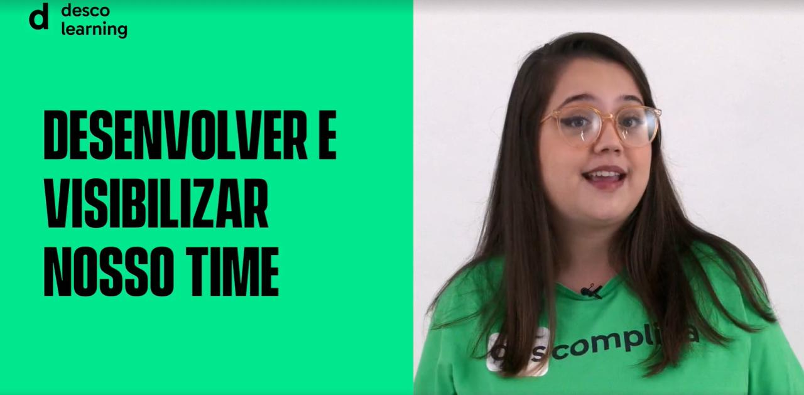
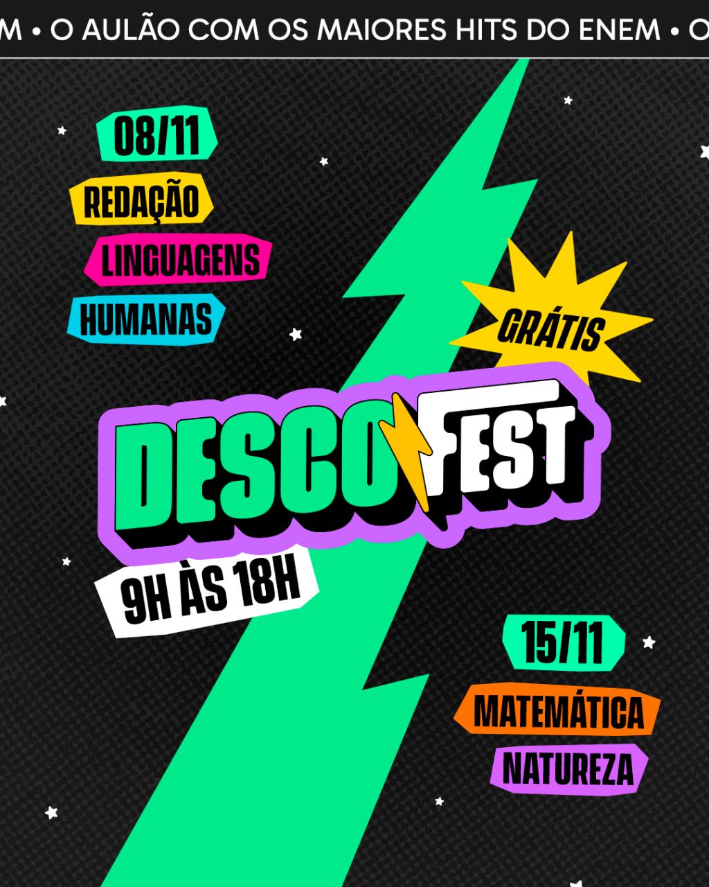

Portfólio
Cada projeto aqui é contado como um case: qual era o problema, o que eu construí e o que mudou. Clique pra ver fotos, contexto e resultados de cada entrega.
PMO · Gestão de programa
Como garantir que um programa de competências funcione com a mesma qualidade pra 700+ estudantes em 4 cidades? Gestão de currículo, indicadores, governança e melhoria contínua, tudo passando pela minha mesa como PMO.
Ver case completo
Plataforma · IA · Dados
Um programa com mais de 700 estudantes em 4 cidades e os dados espalhados em planilhas. A solução: uma plataforma full-stack própria, integrada à API da Anthropic (Claude), que virou a base de decisão da diretoria.
Ver case completo
Produto · IA pedagógica
Como personalizar o estudo de milhares de alunos ao mesmo tempo? Uma IA pedagógica integrada à LMS da Descomplica, com curadoria automática de exercícios e foco em recuperar quem estava ficando pra trás.
Ver case completo
Formação · Metodologias ativas
Educadores em 4 cidades precisavam aplicar a mesma metodologia com qualidade. A resposta foi um programa de formação com simulação de cenários reais, material próprio e certificação digital verificável.
Ver case completo
Formação continuada · LMS
Como criar cultura de aprendizado contínuo num time de operação? LMS própria, sala de aula invertida e aulas assistidas, no meu primeiro projeto de gestão de desenvolvimento pedagógico.

Ver case completo
Gestão · Escala
O maior projeto anual da Descomplica, entregue em 2 meses com mais de 7 times coordenados. Com IA no processo, fomos a primeira plataforma a publicar a resolução extraoficial do ENEM, com 98,31% de acerto.

Ver case completo
Posso contar os bastidores de qualquer um deles com prazer. Me chama!